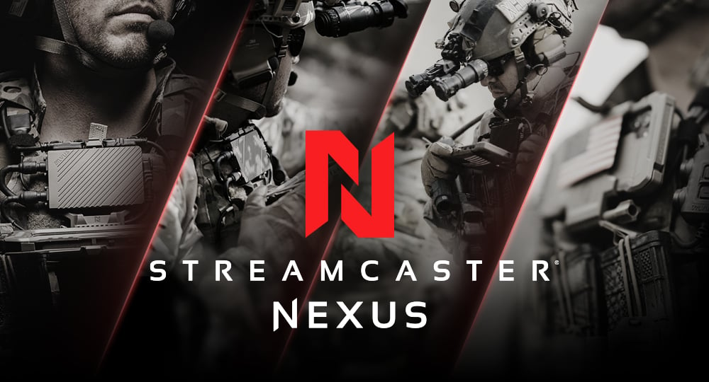

1
Map the work
Map StreamCaster software layers, test rigs, field workflows, and handoff points with Kambiz's leads in week one.
For Kambiz Shoarinejad
Silvus is moving from radio leadership into a broader Motorola scale-up. The software around StreamScape, StreamConnect, firmware, and test automation must stay steady while new regions come online.
We saw the Southern Europe hiring signal, plus software and service roles around StreamCaster. That often means delivery needs support before local hiring catches up.

That signal says Silvus is scaling outside its Los Angeles core, not just filling one role. StreamCaster is now a hardware, firmware, web GUI, ATAK plugin, and field support system. The hard part is keeping release quality high when field needs, RF work, and web interface work move at the same time. If that gap stays open, customer trials and regional rollouts can slow before the local team is fully built.
Map StreamCaster software layers, test rigs, field workflows, and handoff points with Kambiz's leads in week one.
Build automated checks for StreamScape, firmware update paths, API flows, and common radio configuration tasks.
Add C++ and Python support for diagnostic tools, log review, and repeatable release test data.
Run weekly demos with Silvus engineers, then move proven work into their normal release cadence.
Elinext is a full-cycle software development company serving global clients since 1997 across many regions. We have about 700 in-house specialists, with no freelancers or subcontractors involved in delivery. Our engineers cover embedded work, web systems, mobile apps, DevOps, QA, AI, and product design. ISO 9001 and ISO 27001 guide our quality, security, delivery, and audit work. For Silvus, this means extra delivery power while your team keeps sensitive hardware close. We can start with a small pilot and stay inside your process.

Elinext built a telecom platform using React, Python, Java, Kubernetes, and cloud services for remote device support.
Read case study
A scaling QA team helped a telecom infrastructure product improve release quality and test coverage.
Read case study